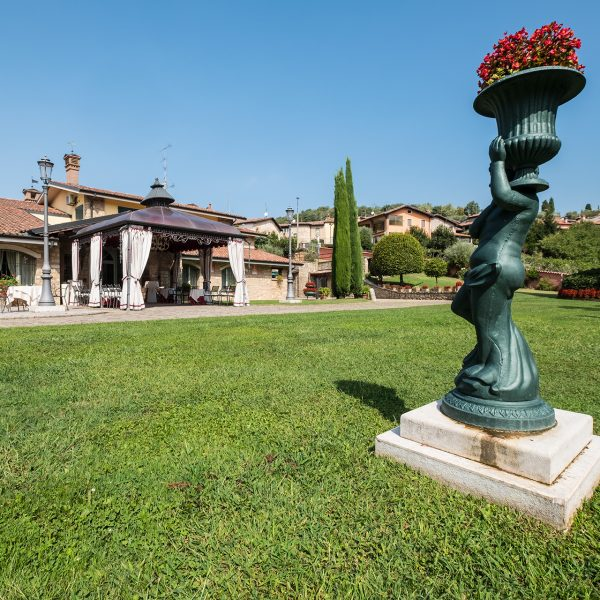
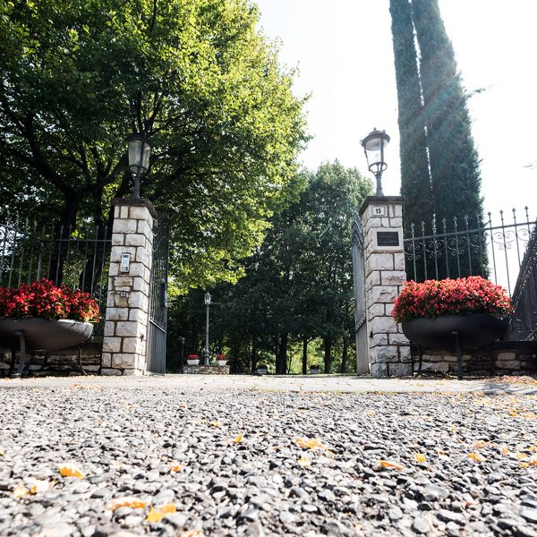
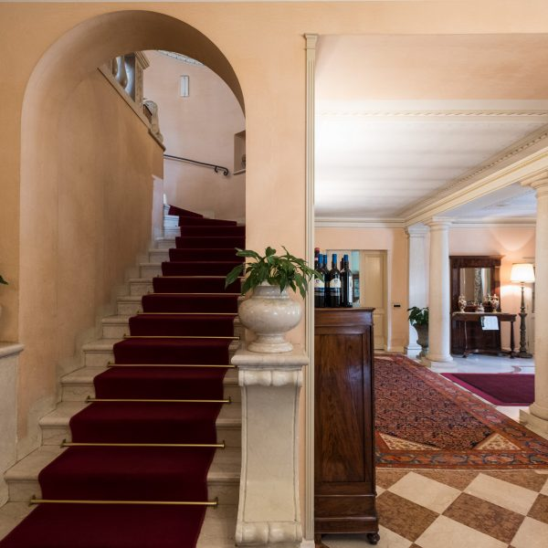
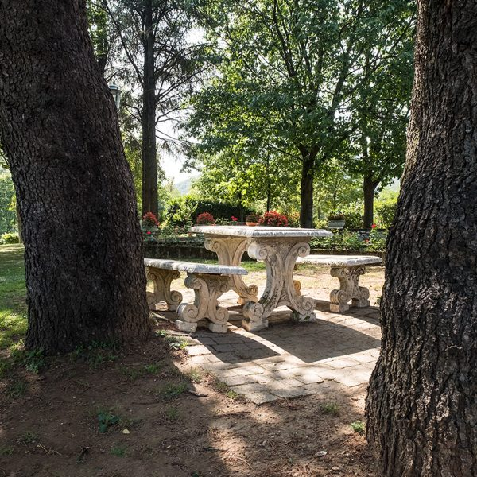
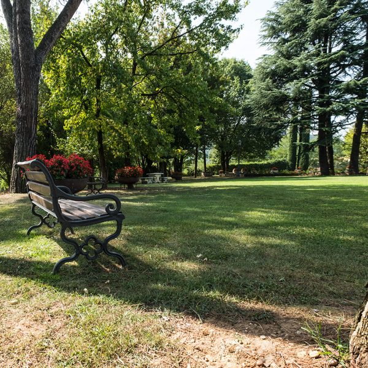

01 / LE SALE
Sala del Lino
Un ambiente della villa da scoprire attraverso la sua atmosfera e i dettagli degli allestimenti.

Una dimora immersa nel verde, tra il carattere degli ambienti interni e la quiete del parco.

Villa Carpino sorge a Ome, nella zona delle Terme, tra luoghi legati alla storia del territorio come la Madonna dell’Avello e l’antico Maglio Averoldi.
Il suo nome richiama il bosco di carpini in cui è situata: un legame con il paesaggio che ancora oggi accompagna l’esperienza di chi arriva alla villa.
La famiglia Barbi gestisce il ristorante dal 1994, unendo esperienza nella ristorazione e attenzione ai dettagli.
Un percorso costruito intorno al piacere di accogliere gli ospiti, alla cura degli ambienti e al valore dei momenti trascorsi insieme.

La Sala del Lino, la Sala delle Rose e la Sala del Camino raccontano il carattere della villa attraverso arredi, dettagli e allestimenti differenti.
Un ambiente della villa da scoprire attraverso la sua atmosfera e i dettagli degli allestimenti.

Uno spazio dedicato all'ospitalità, dove la cura della tavola accompagna i momenti speciali.

Un altro volto della villa, tra ambienti raccolti e occasioni da condividere.
Alberi, fiori e angoli di quiete accompagnano l’esperienza degli ospiti e valorizzano i momenti da condividere. Uno spazio da vivere con naturalezza, tra una passeggiata, un incontro e un'occasione da festeggiare.



Vuoi conoscere meglio gli spazi della villa per un pranzo, una cerimonia o un evento? Contattaci per ricevere informazioni.
Richiedi informazioni ↗Per visitare la villa o organizzare un’occasione speciale, siamo a disposizione per informazioni e prenotazioni.
Contattaci ↗